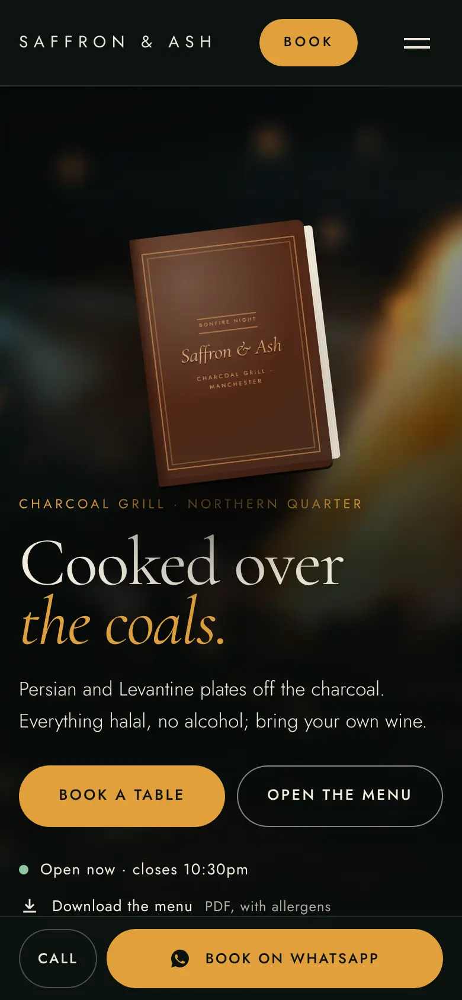
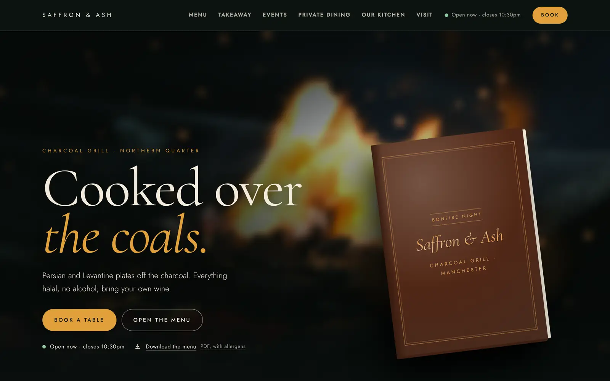

i
The Menu Book
Paired with Plus
The first thing on the home page is the restaurant's menu, bound in leather and lying on the table, with the grill burning softly out of focus behind it. Tap it and it opens full screen. The cover lifts by itself, the way a waiter hands you a menu, and the pages turn like paper: drag a corner, swipe, or use the arrows.
It is set from the same menu as the rest of the site. Change a price once and the book, the menu page and the PDF all change with it. Pages are laid out to fit the screen: one page at a time on a phone, a two-page spread on a laptop. Today's specials sit on a slip tucked inside the cover.
- A restaurant with its own designed menu can use its pages instead, one picture per page.
- Without JavaScript the book is simply a link to the menu, so nobody is ever stuck.
- On a client's site, the fire behind it is a few seconds of their own grill, filmed on a phone. It starts only after the page has loaded, never plays for visitors who ask for less motion, and has a Pause button.

